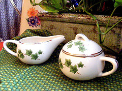
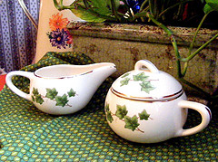

jQuery overScroll插件
by Slobodan Jovanovic这是一个CSS3的苹果的CoverFlow的设计模式的变体


 

用法
-
HTML
<div id="container"> <img src="img1.jpg" /> <img src="img2.jpg" /> <img src="img3.jpg" /> <img src="img4.jpg" /> </div>
-
JavaScript
$('#container').coverscroll();OR$('#container').coverscroll({items:'img'});
选项
这是默认的选项：
var opt = {
'minfactor':20, // 下一个项目是多少比以前的以像素为单位
'distribution':1.5, // 如何分开的项目（项目走散当该值低于1）
'scalethreshold':0, // 多少个项目后，开始缩放
'staticbelowthreshold':false, // 如果为true时，件数下面的“scalethreshold”， - 不动画
'titleclass':'itemTitle', // 类名的元素包含的项目标题
'selectedclass':'selectedItem', // 所选项目的类名
'scrollactive':true, // 滚动功能开关
'step':{ // 压缩步骤
'limit':4, // 多少步上应显示的每一侧
'width':8, // 工序（以像素为单位）的可见部分有多宽
'scale':true // 缩减步骤
},
'bendamount':2, // “弯曲”的CoverScroll（值0.1至1弯下腰，-0.1至-1弯，2的量是直（没有弯曲），1.5 sligtly弯下腰）
'movecallback':function(item){} // 回调函数触发后单击一个项目 - 参数是该项目的jQuery对象
};
方法
这是一种支持的方法列表:
-
next - 移动到下一个项目
$('#container').coverscroll('next'); -
prev - 移动到上一个项目
$('#container').coverscroll('prev');
实例
$('#container').coverscroll();
更复杂的例子（shelf）
HTML
<div id="shelf"> <div id="container"> <div class="item"> <img style="width:100%,height:100%" src="image.jpg" /> <div class="itemTitle">the title 1</div> </div> <!--其他项目--> </div> </div>
JavaScript
$('#container').coverscroll({
items:'.item',
minfactor:10,
scalethreshold:5,
staticbelowthreshold:true,
distribution:1,
bendamount:1.5,
movecallback:getStatus
});
05
the title 1
添加项目展示了如何overScroll不同的行为时，有超过5项中的“.